BENGALURU · 29–30 OCTOBER 2026
Two days at the DeepMind APAC Research Symposium
I was fortunate to be selected for a fully funded place at the Google DeepMind APAC Research Symposium 2026. I came away with new ideas, good conversations, and a camera roll that reminds me how much I enjoyed being there.
The sessions at the Google office were a highlight: Dr. Aditya on Matryoshka, Dr. Mausam on AI in material science and pathology, and Dr. Amitesh on AI safety. Each gave me something new to think about after the talks ended.
Just as memorable were the conversations around them. I especially enjoyed the networking sessions—meeting people working on different problems made the research feel connected to a much wider community. And, in the spirit of an honest recap, the food and stay were lovely too.
Here are a few snapshots from those two days. I shared a little more on LinkedIn ↗

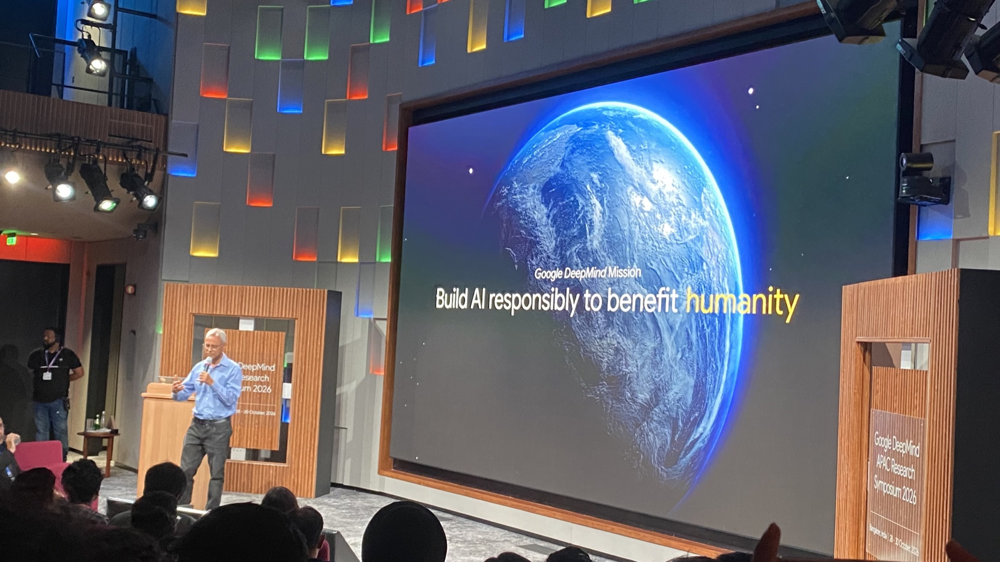
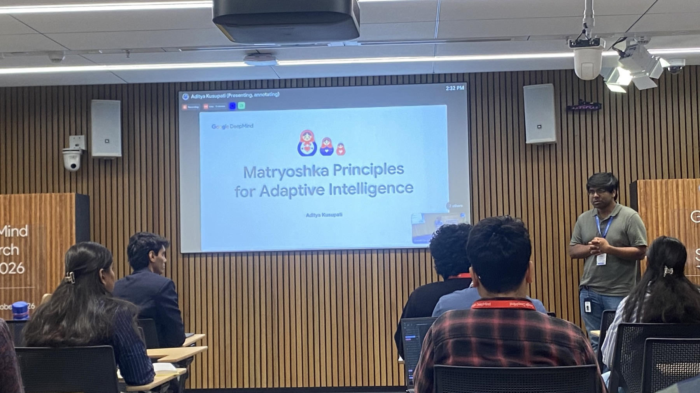
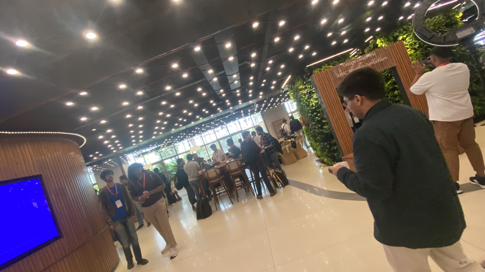
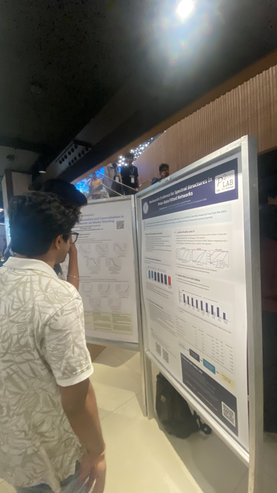
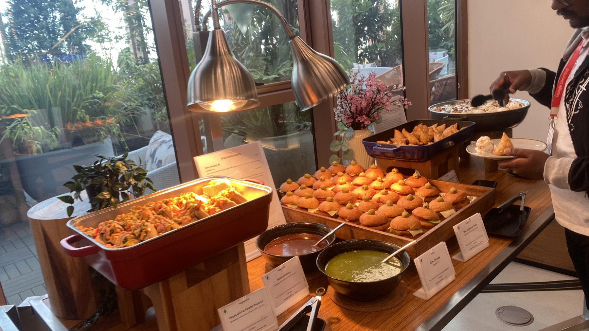
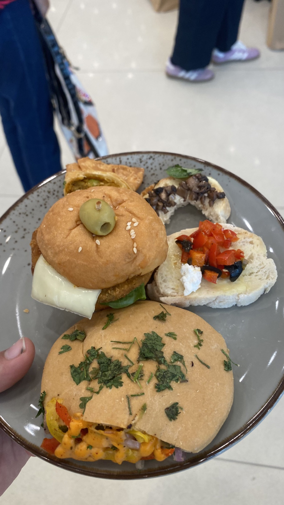
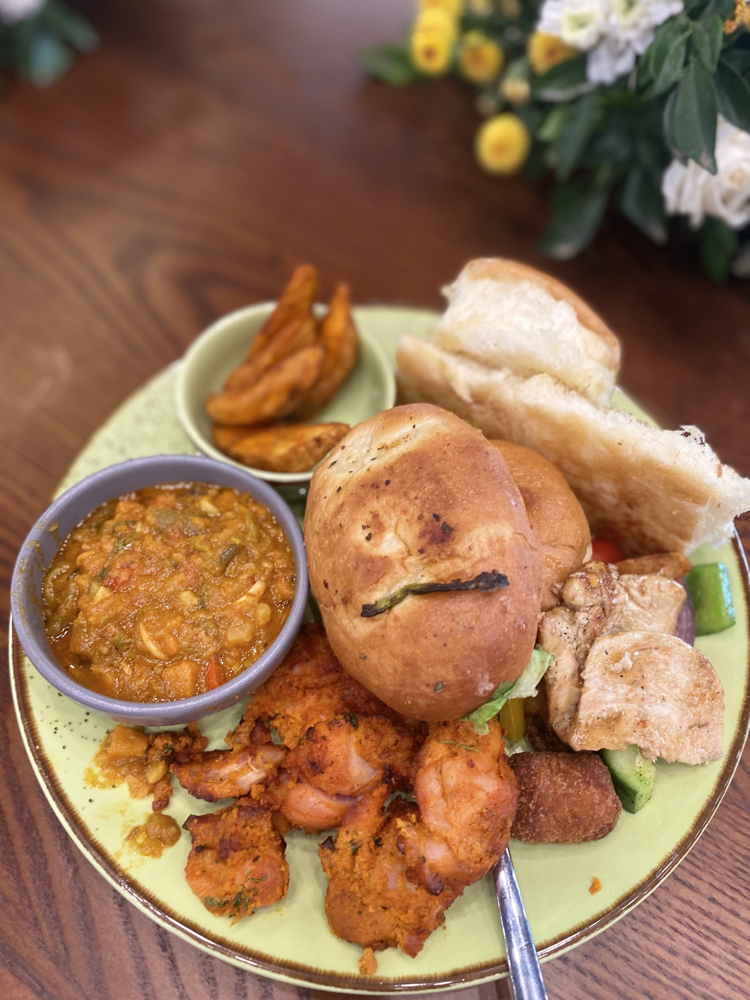
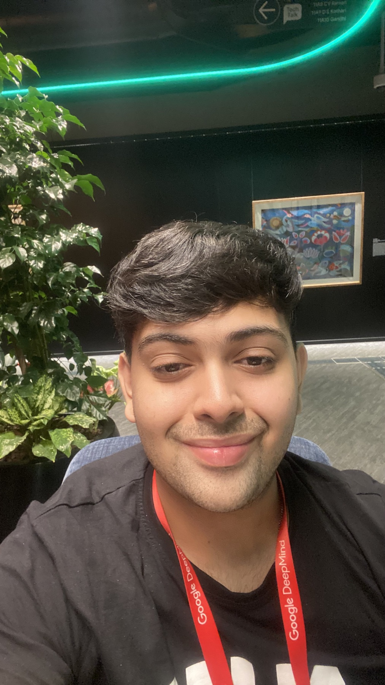
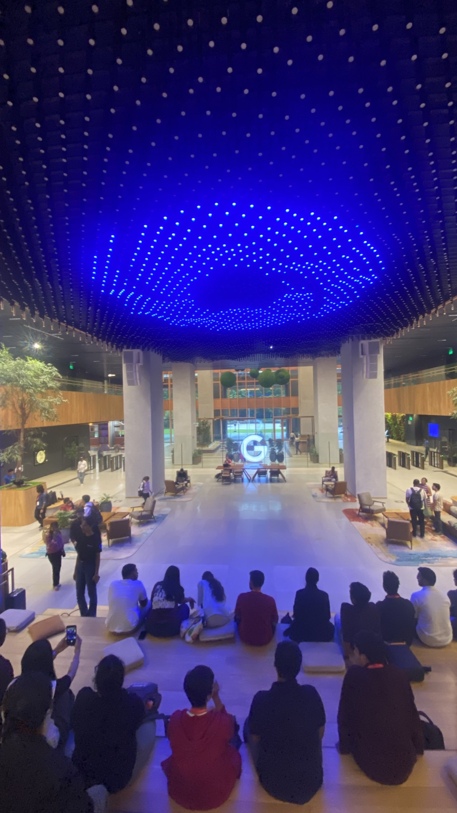
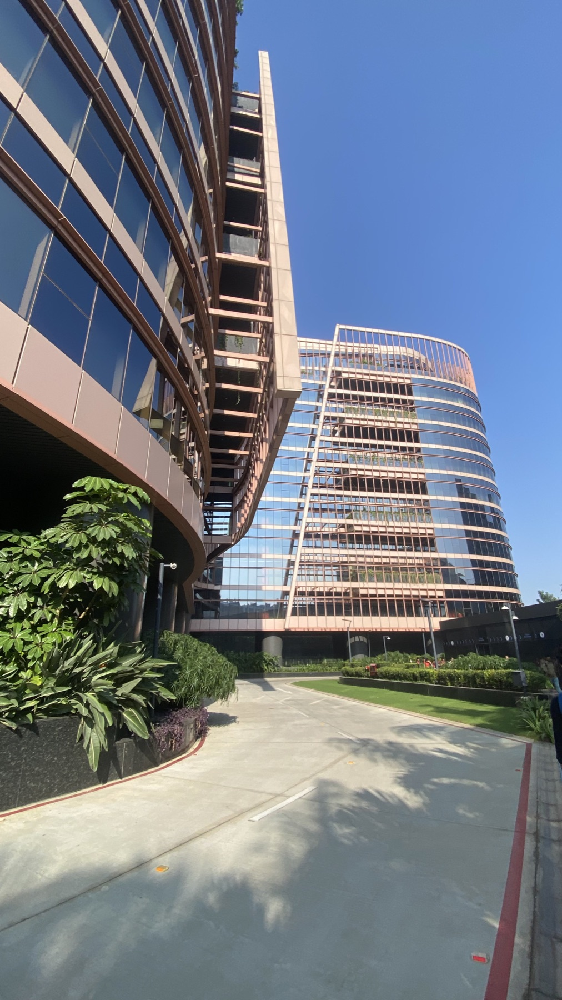
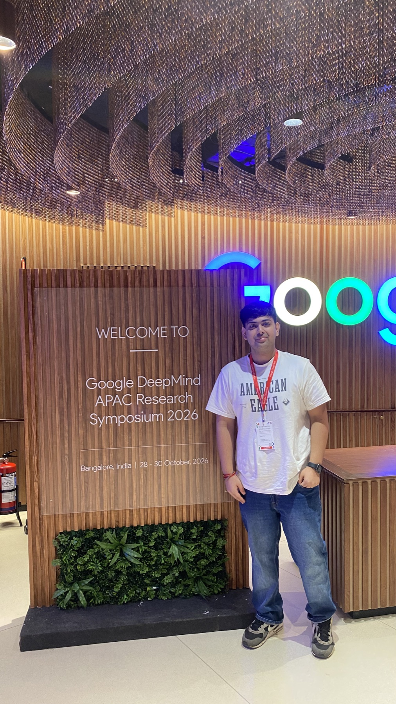
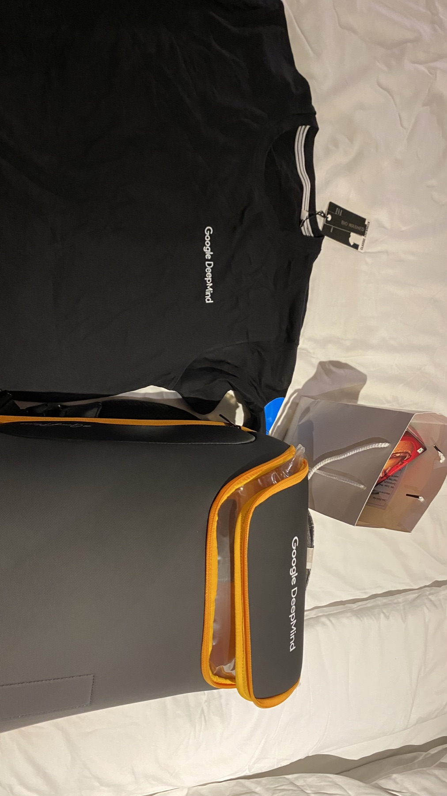